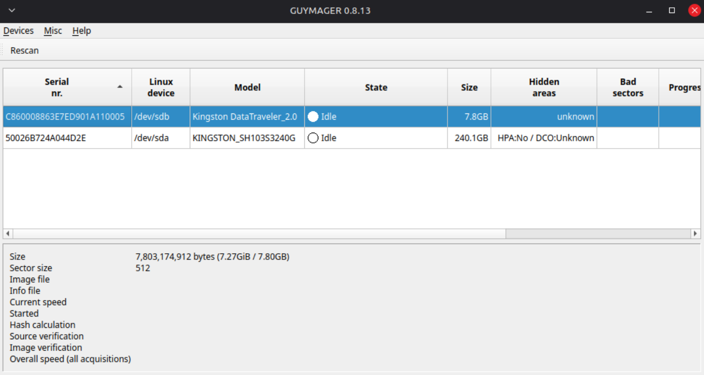
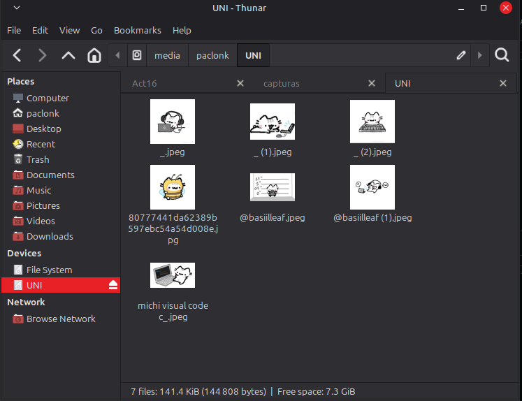
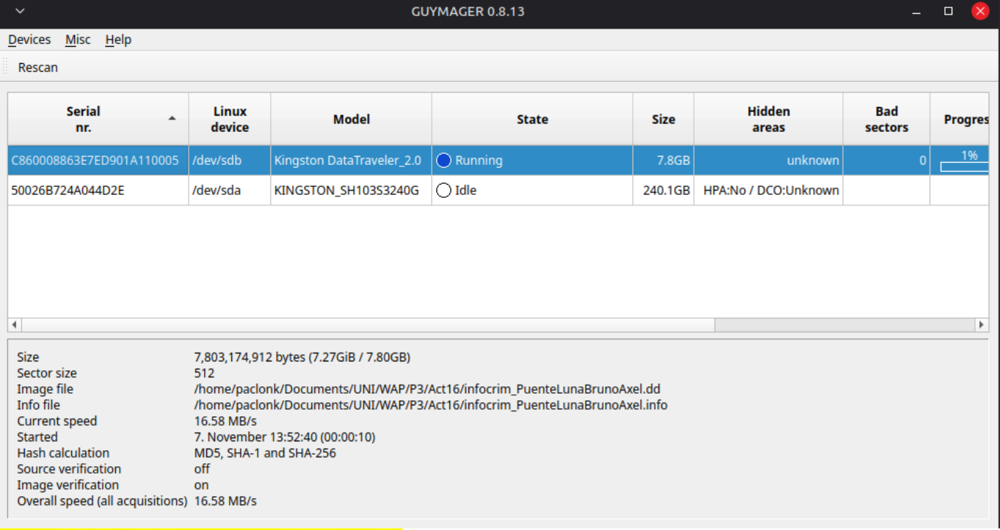
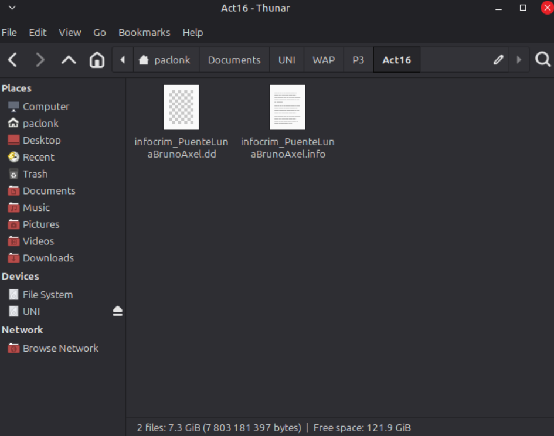

Adquisición forense
Obtener una imagen digital del medio seleccionado para conservar una copia de trabajo que pueda utilizarse en las etapas posteriores de análisis.
ACTIVITY 16 // LA VERDAD EN LOS BITS
La actividad documenta la adquisición forense de un medio de almacenamiento mediante la creación de una imagen en formato .dd. El trabajo se realizó desde una ThinkPad T430s con Linux Mint 22.3, utilizando Guymager como alternativa nativa para Linux.
IMPLEMENTACIÓN: la guía de la práctica contempla FTK Imager en Windows; para realizar la adquisición desde el entorno Linux disponible se utilizó Guymager 0.8.13-2build2.
Obtener una imagen digital del medio seleccionado para conservar una copia de trabajo que pueda utilizarse en las etapas posteriores de análisis.
La actividad se completó desde la ThinkPad T430s con Linux Mint 22.3, sin cambiar el sistema operativo de trabajo para utilizar una herramienta de Windows.
Se utilizó Guymager 0.8.13-2build2 para realizar la adquisición desde el entorno Linux. La aplicación se empleó como alternativa a FTK Imager.
El resultado de la adquisición se generó en formato RAW con extensión .dd. El nombre, tamaño y ubicación exactos se completan en el registro de evidencia inferior.




Informe de adquisición forense.
Si el visor no carga, utiliza OPEN // PDF.
La adquisición constituye el punto de partida para examinar evidencia digital. Por ello, la documentación debe permitir identificar el medio de origen, la herramienta y el entorno utilizados, el archivo resultante y los valores de integridad que efectivamente se hayan calculado y registrado.
Realizamos la adquisición de una memoria USB desde Linux Mint 22.3 utilizando Guymager como alternativa a FTK Imager. Obtuvimos una imagen forense en formato DD (RAW), con un total de 15,240,576 sectores y sin registrar sectores defectuosos durante el procedimiento. Para documentar y comprobar la integridad de la imagen calculamos los hashes MD5, SHA-1 y SHA-256. La verificación posterior de la imagen fue satisfactoria y los valores obtenidos coincidieron con los registrados durante la adquisición. Finalmente, conservamos la imagen .dd y el archivo de información .info, que contiene los datos del dispositivo, la identificación del caso, las marcas de tiempo y los resultados del proceso. Así dejamos constancia de cómo se obtuvo la evidencia y de las comprobaciones realizadas sobre la copia generada.